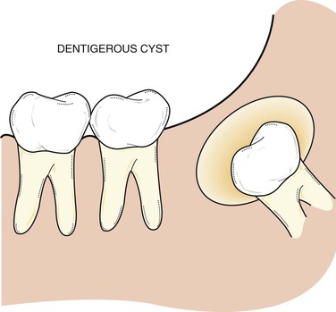

Dentigerous cyst, also known as follicular cyst is an epithelial-lined developmental cyst formed by accumulation of fluid between the reduced enamel epithelium and crown of an unerupted tooth. Dentigerous cyst is the second most prevalent type of odontogenic
cysts after radicular cyst. 70 percent of the cases occurs in the mandible. Dentigerous cyst is usually painless. Patient usually comes with a concern of delayed tooth eruption or facial swelling. Dentigerous cyst can go unnoticed
and may be discovered coincidentally on a regular radiographic examination.
Dentigerous cysts most commonly occur in the 2nd and 3rd decades of life. Males have been reported to be more prevalent than females. These cysts can also be found in young children and adolescents. These cysts are commonly
single lesions. Bilateral and multiple dentigerous cysts are very rare although they have been reported.
Early detection and removal of the cysts is essential to reduce morbidity since dentigerous cyst can attain considerable size without any symptoms. Patient who presents with unerupted teeth should be thoroughly examined
with radiographic examinations to check our for dentigerous cysts. Panoramic radiographs may be indicated for this purpose. Pathologic analysis of the lesion is important for the definitive diagnosis even though radiographs
provide valuable information.
